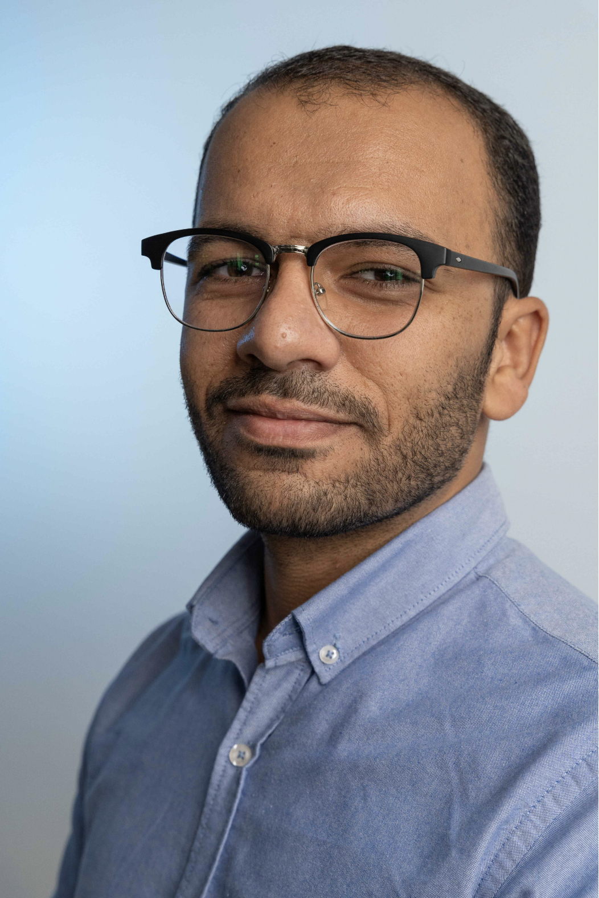

AI researcher and Perception engineer with 5+ years of experience in deep learning, image processing and multimodal computer vision systems (e.g. stereo cameras, lidars ...etc). My expertise spans sensor integration, anomaly inspection, Edge AI (Nvidia hardware), autonomous shuttles, and robotics. MSc in Control, Microsystems and Microelectronics.

Background spanning engineering multiple datasets for services and research, inclding a multimodal dataset of traffic elements consisting of LiDAR point clouds and stereo images under sever weather conditions, training and fine-tuning models, sensor integration UR5 robotic arm manipulation, anomaly inspection and detection on metal sheets, autonomous shuttles, and Edge AI deployment on NVIDIA Jetson platforms.
LiDAR + stereo RGB fusion, extrinsic calibration, time synchronisation across heterogeneous sensors. Validated multimodal pipelines before deployment.
TensorRT INT8/FP16 quantisation on NVIDIA Jetson Nano. >30 FPS real-time inference under hard latency budgets. ROS2 integration in C++ and Python.
Created MuFoRa — 55,000 synchronised stereo RGB + LiDAR frames under measured adverse weather. Published at VISAPP 2025. Benchmark for external research teams.
Production-quality repositories covering the full robotics perception stack. Built to close real knowledge gaps and demonstrate what I can ship.
Clean training infrastructure: DataLoader benchmarks (1.9× speedup), correct train/eval/no_grad patterns, fine-tuning with layer-wise LR decay, custom Dice + Weighted CE losses, NaNGuard for production training.
View on GitHub →Checkerboard calibration with reprojection error visualisation, undistortion pipeline, SIFT + Lowe's ratio test + RANSAC homography, image stitching demo. Intrinsic matrix math.
View on GitHub →Hugging Face DETR on custom data, progressive unfreezing, layer-wise LR decay, mAP@50 / mAP@50-95 evaluation with torchmetrics, ONNX export.
Monocular depth (Depth Anything v2), stereo depth from calibrated cameras, point cloud generation, Open3D visualisation.
Full EKF derivation in markdown, LiDAR-camera projection with proper extrinsics, multi-sensor fusion for object detection. Every equation written and explained from first principles.
PatchCore + EfficientAD on all 15 MVTec categories, DINOv2 backbone experiment, full AUROC table, pixel-level anomaly heatmap demo.
Perception (DeTr/Yolo obstacle detection + drivable area segmentation) feeds a Model Predictive Controller that computes obstacle-aware trajectories in simulation (Gazebo). Cost function combines reference tracking, perception-detected obstacle avoidance, and control smoothness. 2-minute demo video. A combination of classical control and modern deep learning.
Peer-reviewed contributions to computer vision and autonomous perception research.